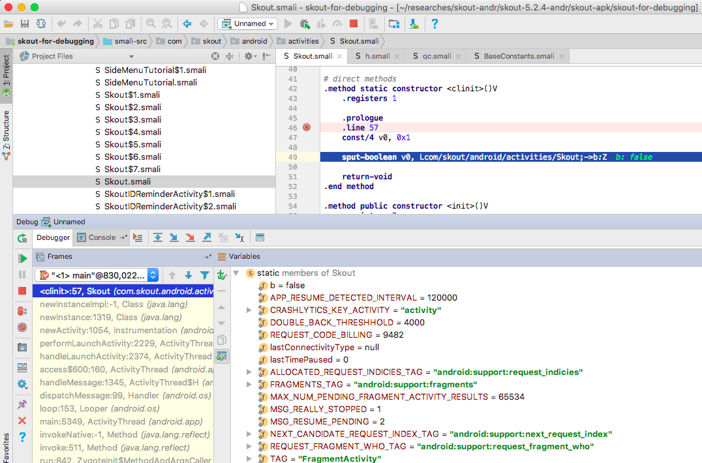

This guide is a part of the series about third-party Android code debugging:
In the previous guide about debugging third-party Android Java code, we
Acting in this way, we may miss a lot of interesting things, e.g. onCreate(...) method of the main activity. In this section, we consider a trick for debugging Android applications from the very first Dalvik instruction.
For this trick, you need an Android device with a console to run command line utils on the device (you can use adb shell or install SSHDroid and just ssh the device from your Mac). Also, “USB debugging” must be enabled on the device.
Note! If the trick does not work for you on a non-rooted Android device, try to root the device and run am as root (in adb shell su console or in an SSH consolse as root #). If root doesn’t help… well, sorry, probably the best solution is to change the device/ROM and try again. ★
The trick itself is very simple. Follow the guide (see the step-by-step instruction in “How to debug APK” section). On step 5, ”…run the app on your Android device…”,
Connect your Android device with adb shell or SSH and run
$ am start -W -D <the application package>/<the application activity to start>
Note! You can find the application package by executing in the Android device console:
$ pm list packages
To find the application activity, you can
run the app by tapping its icon on the Android device, then execute in Android device console:
$ am stack list
it gives you a list of running apps activities. Find the right one and use it with the am start -W -D command line.
…or, if am on your device doesn’t support stack list option, just look at the decompiled Dalvik code and recognise the name of the main activity yourself. ★
For example, the right am start command line for Skout app is
$ am start -W -D com.skout.android/com.skout.android.activities.Skout
The resutl should look similar to

Switch to Android Studio, find the main activity class and set breackpoints at
.method static constructor <clinit>()V
.method public constructor <init>()V
.method public onCreate(Landroid/os/Bundle;)V
For the Skout app, it looks like

Then just keep following the guide. As soon as you run debugging on the step 6, your breakpoints hit and you can start debugging the app from the very first Dalvik instruction:

In general, the good thing is we don’t need to touch (patch/rebuild/resing) APK. The bad thing is the trick may need root to work.
Commenting is not available in this blog, but you can write me a letter or message. Please, note that English is not my native language. I'm sorry for mistakes/missprints, if any.
Prev: A quick word on Xposed + JustTrustMe SSL certificate UN-pinning